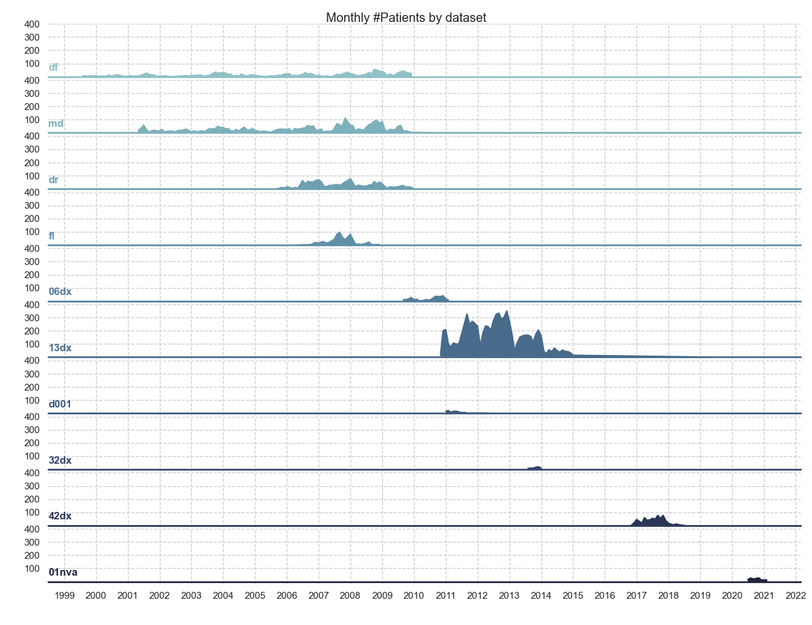

Note
Click here to download the full example code
Rolling prevalence (by dsource)¶
This example computes the prevalence of dengue in the HTD as the
proportion of patients which were diagnosed with Dengue based on any
positive result for the NS1, PCR or serology tests. The
x-axis represents the time (group by month) and the y-axis the prevalence
in % the first graph and the number of patients used to compute the
prevalence in the second graph.
Warning
As shown in first graph, there is a patient from 14dx that appears in 2019. This should be corrected in the dataset.
- 
Out:
Applying... oucru_dengue_interpretation_feature.
Patients:
date dsource pcr_dengue_serotype ns1_interpretation igm_interpretation igg_interpretation dengue_interpretation month year
study_no
01nva-003-1001 2020-06-13 01nva <NA> <NA> <NA> <NA> False 6 2020
01nva-003-1002 2020-06-23 01nva <NA> <NA> <NA> <NA> False 6 2020
01nva-003-1003 2020-07-04 01nva <NA> <NA> <NA> <NA> False 7 2020
01nva-003-1004 2020-06-24 01nva <NA> <NA> <NA> <NA> False 6 2020
01nva-003-1005 2020-07-22 01nva <NA> <NA> <NA> <NA> False 7 2020
... ... ... ... ... ... ... ... ... ...
md-995 2003-07-28 md DENV-2 <NA> <NA> <NA> True 7 2003
md-996 2003-07-25 md <LOD <NA> <NA> <NA> False 7 2003
md-997 2003-07-28 md <LOD <NA> <NA> <NA> False 7 2003
md-998 2003-07-29 md <LOD <NA> <NA> <NA> False 7 2003
md-999 2003-07-29 md DENV-4 <NA> <NA> <NA> True 7 2003
[16476 rows x 9 columns]
Table
date dsource prevalence n_patients
0 1999-07-31 df 16.666667 6
1 1999-08-31 df 42.857143 7
2 1999-09-30 df 0.000000 3
3 1999-10-31 df 42.857143 7
4 1999-11-30 df 0.000000 4
.. ... ... ... ...
425 2020-09-30 01nva 0.000000 23
426 2020-10-31 01nva 0.000000 29
427 2020-11-30 01nva 0.000000 14
428 2020-12-31 01nva 0.000000 12
429 2021-01-31 01nva 0.000000 14
[430 rows x 4 columns]
19 20 21 22 23 24 25 26 27 28 29 30 31 32 33 34 35 36 37 38 39 40 41 42 43 44 45 46 47 48 49 50 51 52 53 54 55 56 57 58 59 60 61 62 63 64 65 66 67 68 69 70 71 72 73 74 75 76 77 78 79 80 81 82 83 84 85 86 87 88 89 90 91 92 93 94 95 96 97 98 99 100 101 102 103 104 105 106 107 108 109 110 111 112 113 114 115 116 117 118 119 120 121 122 123 124 125 126 127 128 129 130 131 132 133 134 135 136 137 138 139 140 141 142 143 144 145 146 147 148 149 150 151 152 153 154 155 156 157 158 159 160 161 162 163 164 165 166 167 168 169 170 171 172 173 174 175 176 177 178 179 | # Libraries
import calendar
import pandas as pd
import numpy as np
import seaborn as sns
import matplotlib.pyplot as plt
import matplotlib.dates as mdates
# DataBlend library
from datablend.core.repair.correctors import oucru_dengue_interpretation_feature
# Seaborn
sns.set_theme(style="whitegrid")
# ---------------------------------
# Methods
# ---------------------------------
def prevalence(x):
return (np.sum(x) / len(x)) * 100
def label(x, color, label):
ax = plt.gca()
ax.text(0, .2, label, fontweight="bold",
color=color, ha="left", va="center",
transform=ax.transAxes)
# ---------------------------------
# Constants
# ---------------------------------
# The data filepath
# The data filepath
path = '../../resources/data/20210106-v0.0.1/combined/combined_tidy.csv'
# Features
features = ['study_no',
'date',
'dsource',
'pcr_dengue_serotype',
'ns1_interpretation',
'igm_interpretation',
'igg_interpretation']
# ---------------------------------
# Main
# ---------------------------------
# Read data
data = pd.read_csv(path, low_memory=False,
parse_dates=['date'],
usecols=features)
# Format
data = data.convert_dtypes()
data = data[features]
# Add dengue interpretation
data['dengue_interpretation'] = \
oucru_dengue_interpretation_feature(data,
pcr=True, ns1=True, igm=True,
paired_igm_igg=True, default=False)
# Overall outcome for patient
patients = data.groupby('study_no').max()
patients['month'] = patients.date.dt.month
patients['year'] = patients.date.dt.year
# Show
print("\nPatients:")
print(patients)
# Compute prevalence
aux = patients.reset_index() \
.groupby([pd.Grouper(key='date', freq='M'), 'dsource']) \
.agg(prevalence=('dengue_interpretation', prevalence),
n_patients=('study_no', 'count')).reset_index()
# Show
print("\nTable")
print(aux)
# Create palette
pal = sns.cubehelix_palette(10, rot=-.25, light=.7)
# ---------------------------
# Plot prevalence
# ---------------------------
# Configure
sns.set_style("whitegrid", {
"ytick.major.size": 0.1,
"ytick.minor.size": 0.05,
'grid.linestyle': '--'
})
# Create facetgrid
g1 = sns.FacetGrid(aux, row='dsource', hue='dsource',
height=1, sharex=True, aspect=15, palette=pal)
# Plot lines
g1.map(sns.lineplot, "date", "prevalence")
# Configure axes
g1.map(plt.axhline, y=0, lw=2, clip_on=False)
g1.map(label, "dsource")
g1.map(plt.fill_between, "date", "prevalence")
# Configure axes
g1.set_titles("")
g1.set(yticks=[25, 50, 75, 100], ylabel='', xlabel='')
g1.despine(bottom=True, left=True)
g1.fig.subplots_adjust(hspace=0.02)
# Configure ticks
ax = plt.gca()
ax.xaxis.set_major_locator(mdates.YearLocator())
ax.xaxis.set_major_formatter(mdates.DateFormatter("%Y"))
ax.xaxis.set_minor_formatter(mdates.DateFormatter("%Y"))
# Suptitle
plt.suptitle('Monthly prevalence (%) by dataset')
# ---------------------------
# Plot n_patients
# ---------------------------
# Configure
sns.set_style("whitegrid", {
"ytick.major.size": 0.1,
"ytick.minor.size": 0.05,
'grid.linestyle': '--'
})
# Create facetgrid
g2 = sns.FacetGrid(aux, row='dsource', hue='dsource',
height=1, sharex=True, aspect=13, palette=pal)
# Plot lines
g2.map(sns.lineplot, "date", "n_patients")
# Plot extra
g2.map(plt.axhline, y=0, lw=2, clip_on=False)
g2.map(label, "dsource")
g2.map(plt.fill_between, "date", "n_patients")
# Configure axes
g2.set_titles("")
g2.set(yticks=[100, 200, 300, 400], ylabel='', xlabel='')
g2.despine(bottom=True, left=True)
g2.fig.subplots_adjust(hspace=0.02)
# Configure ticks
ax = plt.gca()
ax.xaxis.set_major_locator(mdates.YearLocator())
ax.xaxis.set_major_formatter(mdates.DateFormatter("%Y"))
ax.xaxis.set_minor_formatter(mdates.DateFormatter("%Y"))
# Sup title
plt.suptitle('Monthly #Patients by dataset')
# Show
plt.show()
|
Total running time of the script: ( 0 minutes 10.351 seconds)